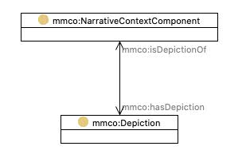

http://mmc.movielabs.com/ontology#NarrativeContextComponent
Class 'Narrative context component'

type
Class [owl:Class]
label
Narrative context component
subClassOf
Context component
References
as domain (
has depiction
)
as range (
is depiction of
)
as subClassOf (
Character [mmco:Character]
,
Narrative prop
,
Narrative sequence
,
Narrative scene
,
Narrative set dressing
,
Narrative shot
,
Narrative Location [mmco:NarrativeLocation]
,
Narrative script
)
Generated with
TopBraid Composer
by
TopQuadrant, Inc.